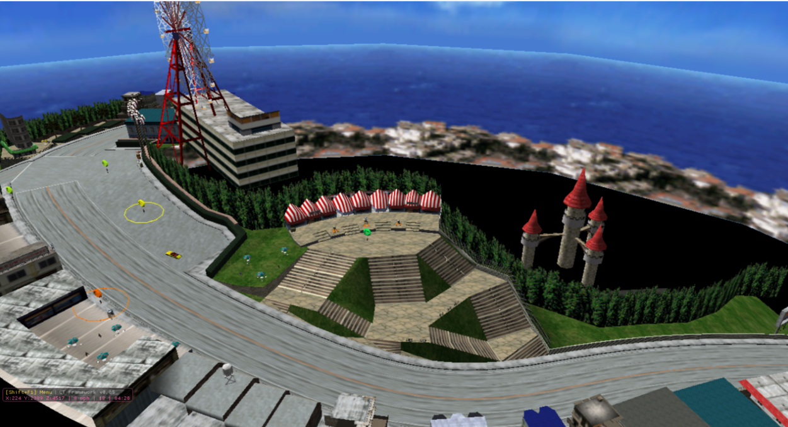
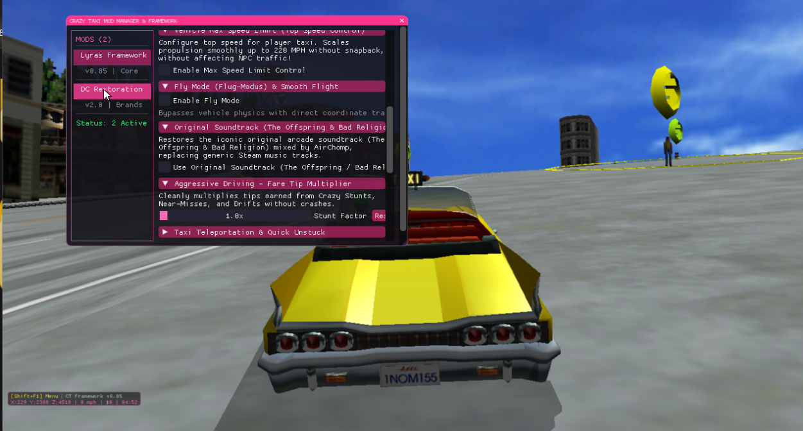
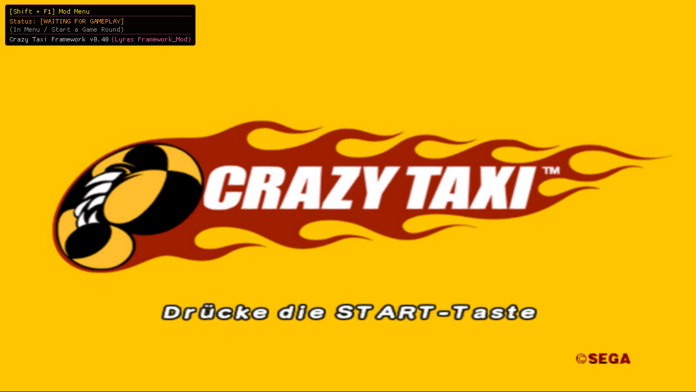

Unofficial, non-commercial fan project — created by fans, for fans. Not affiliated with, authorized, or endorsed by SEGA Corporation. Crazy Taxi is a registered trademark of SEGA.
Multi-Mod Loader & Retro Game Modding Suite
A free community mod suite and true Multi-Mod Loader & Manager for Crazy Taxi 1 on PC (v0.91). Effortlessly install, chain, and run mods and fan patches simultaneously — with full support for modern Windows 10 / Windows 11 — without modifying original game archives.
System Architecture & Modding Tools
Historically, modifying Crazy Taxi 1 on PC was practically nonexistent or restricted to breaking single-purpose ASI scripts, destructive archive overwrites, and clunky ROM hacks. Ultimate Crazytaxi Mod (18 Mods) establishes the first unified Multi-Mod Loader & Manager in Crazy Taxi history, capable of discovering, chaining, and running multiple mods simultaneously in memory.
Learn how game modding works without risk: simply drop new mod DLLs, custom texture packages, or gameplay
scripts into the mods/ directory. The framework loads and initializes every module concurrently
without conflict, complete with an in-game DirectX 9 GUI overlay to toggle and adjust settings in real time.

dinput8.dll) with dynamic module
chaining
mods/ directory — drop in or remove mods with zero
friction
data_little/) — clean zero-footprint
uninstall
Unlike brittle memory trainers tied to a single build, our mod loader utilizes signature-based PE scanning. It is verified 100% compatible with modern PC releases and Windows 10 / Windows 11 out of the box.
steamapps\common\Crazy Taxi\ or any game
folder containing Crazy Taxi.exe
18 Essential Game Mods & Easy Modmaker or Crazy Taxi
Full technical overview of all 18 core engine mods, memory patches, and retro gameplay features in Version 0.91. From the legendary Offspring and Bad Religion soundtrack restoration mod to original KFC, Pizza Hut & Tower Records brand recovery, 2K HD texture pack upscaling, 60 FPS unlocked stability, widescreen support, and 360° freecam. Click on any video demonstration button to expand a high-resolution cinema player directly beneath the feature row.
| # | Category | Feature Name | Technical Description | Status | Demonstration |
|---|---|---|---|---|---|
| 01 | Gameplay | Custom Ingame Time & Timer Freeze | Write directly to 0x016a41a4 frame timer. Freeze the game round
countdown indefinitely or set arbitrary round lengths. |
✅ Implemented & Working | |
|
1080p Full HD
Video Demonstration: Custom Ingame Time & Timer Freeze |
|||||
| 02 | Gameplay | Aggressive Driving – Fare Tip Multiplier | Hooks the stunt tip finalizer at 0x004a8de7. Scalable multiplier for
tips earned through Crazy Drifts, Crazy Jumps, and near-misses. |
✅ Implemented & Working | |
|
1080p Full HD
Video Demonstration: Aggressive Driving – Fare Tip Multiplier |
|||||
| 03 | Gameplay | No Guide Arrow, No Destination Mark, "Another Day" Mode | Removes HUD navigation aids (0x016ef0bc, 0x016eeea0) and
activates Sega's hidden internal "Another Day" alternate passenger configuration
(0x01662304). |
✅ Implemented & Working | |
|
1080p Full HD
Video Demonstration: No Guide Arrow, No Destination Mark & Another Day Mode |
|||||
| 04 | Gameplay | Taxi Teleporter | Instantly teleports player vehicle coordinate vectors
(0x01661574..7c) to landmark locations and quick unstuck recovery targets.
|
✅ Implemented & Working | |
|
1080p Full HD
Video Demonstration: Taxi Teleporter |
|||||
| 05 | Gameplay | Taxi Fly Mode | Bypasses vehicle ground gravity and pitch snapback. Enables 3D taxi flight. Collision disabling under active revision. | ❌ Not working yet | |
|
1080p Full HD
Video Demonstration: Experimental Taxi Fly Mode |
|||||
| 06 | Gameplay | NEW | Change Max Speed Limit | Modify the vehicle's maximum speed limit. Scales vehicle propulsion cleanly up to 220 MPH without physics snapback or modifying ambient NPC traffic vehicles. | ✅ Implemented & Working | Verified Working |
| 07 | Unlocks | Unlock All Vehicles + Sega Master Unlock | Writes unlock bitmasks to 0x0164fa58 (0xFF) and 0x016aa3c0
(0xFFFFFFFF). Unlocks all cabs, bikes, and Sega Master secrets. |
✅ Implemented & Working | |
|
1080p Full HD
Video Demonstration: Unlock All Vehicles + Sega Master Content |
|||||
| 08 | Visuals & Audio | Crazy Taxi Original Textures | Restores authentic Dreamcast-era commercial brand textures (Tower Records, Pizza Hut, KFC, FILA) stripped from the Steam release. | ✅ Implemented & Working | |
|
1080p Full HD
Video Demonstration: Original Dreamcast Textures Restoration |
|||||
| 09 | Visuals & Audio | Restore Original Soundtrack | Restores the legendary arcade soundtrack by The Offspring and Bad Religion, seamlessly replacing the generic replacement audio. | ✅ Implemented & Working | |
|
1080p Full HD
Video Demonstration: Original Soundtrack (The Offspring & Bad Religion) |
|||||
| 10 | Camera | Camera Location & Rotation | Direct interactive sliders for camera eye vector
(0x01661494..9c), target vector (0x016614f8..1500),
and roll angle. |
✅ Implemented & Working | |
|
1080p Full HD
Video Demonstration: Camera Location & Rotation Sliders |
|||||
| 11 | Camera | Camera Quick Setup Buttons | Instant one-click presets for default chase cam, bumper perspective, cinematic high-angle, and top-down map inspection. | ✅ Implemented & Working | |
|
1080p Full HD
Video Demonstration: Camera Quick Setup Presets |
|||||
| 12 | Camera | Freecam (Full 3D Camera Detachment) | Hooks camera update routine at 0x0051f582. Detaches view entirely with
WASD lateral flight, Space to ascend, and Shift to descend. |
✅ Implemented & Working | |
|
1080p Full HD
Video Demonstration: Freecam 3D Camera Detachment |
|||||
| 13 | Camera | Mouse Look Around (360° Orbit) | Smooth 360-degree orbit mouse look around vehicle with customizable pitch/yaw axis inversion settings stored in JSON config. | ✅ Implemented & Working | |
|
1080p Full HD
Video Demonstration: 360° Mouse Look Around |
|||||
| 14 | System & Performance | Spawn & Chunk Distance Multiplier | Patches camera chunk culling constants at 0x005a10a8 (850.0f) and
0x0059f9f8 (450.0f) to expand view and streaming distance. |
Working for ~40% of objects (Engine rendering limit reached) | |
|
1080p Full HD
Video Demonstration: Spawn & Chunk Distance Multiplier |
|||||
| 15 | System & Performance | Realtime Keybinding Change | Runtime DirectInput hardware keyboard poller interception at 0x00486390
to rebind controller keys without game restarts. |
❌ Not Working Yet | Under Development |
| 16 | Texture Mod | Real-Time Texture Replacement & 2K Upscaling | Direct3D 9 texture injection in real time without game restarts. Upscale vehicle, road, and world textures up to 2K (2048x2048) resolution. | ✅ Implemented & Working | Texture Mod Hub ↗ |
| 17 | Texture Mod | Texture Sorting & 1-Click Original Restore | Categorized subfolder structure (texDC0 for cabs, texDC1 for maps) and instant 1-click restore to original textures via the F10 hotkey. | ✅ Implemented & Working | View Details ↗ |
| 18 | Texture Mod | Automatic Mipmaps & POT Snapper | Hardware/CPU 2x2 box-filter downsampling mipmap pyramids and automatic power-of-two (POT) dimension snapping for modified PNG/JPG textures. | ✅ Implemented & Working | View Details ↗ |
Deployment Guide
The framework requires no installer executable (.exe) and makes zero modifications to original game archives. Follow the 4 steps or watch the full installation walkthrough below.
Download and extract Lyras Framwork MOD.zip. The package contains dinput8.dll and
the mods/ directory.
Open the folder containing Crazy Taxi.exe. Fully supported paths include:
C:\Program Files (x86)\Steam\steamapps\common\Crazy Taxi\
Or any custom game folder containing Crazy Taxi.exe
Drag dinput8.dll and mods/ into the root folder next to
Crazy Taxi.exe. Drop any other mods or texture packs into mods/ to load and manage
them concurrently.
Run Crazy Taxi.exe. The mod loader automatically hooks in. Press Shift +
F1 (or F7 / F10) at any time to open the in-game mod menu.
dinput8.dll and the mods/ directory. Original
game files remain 100% vanilla and untouched.
Input Specifications
Pre-configured keybindings and input routing designed for responsive keyboard control and cinematic camera manipulation.
Developer Hub & Memory Engine
All memory addresses, pointers, Direct3D 9 pipeline hooks, and C++ developer tutorials have moved to our dedicated Mod Developer Hub.
Learn how to build standalone C++ plugins inside mods/ that automatically appear in the
Shift+F1 menu with full ImGui widgets and zero device conflicts.
Detailed technical breakdown of how the real-time DirectX 9 texture injection engine detours Sega's renderer and swaps VRAM pointers in milliseconds.
Explore Pipeline ↗A searchable and downloadable reference of all verified memory addresses, 26 static Sega tables, vehicle physics vectors, and anti-crash hooks.
Browse Offsets Table ↗Retro Gaming & Modding Guide (2026)
Discover how to restore, mod, and play Crazy Taxi on modern PC systems with 2K HD texture packs, original Offspring & Bad Religion music, 60 FPS unlocked performance, and widescreen fixes.
When Sega released Crazy Taxi in arcades (1999) and on the Sega Dreamcast (2000), developer Sega Hitmaker created an iconic open-world arcade racer fueled by the adrenaline-pumping punk rock sound of The Offspring ("All I Want" with the unforgettable "Ya ya ya ya ya!", "Way Down the Line") and Bad Religion ("Ten in 2010", "The Meaning of Life"). Drivers speeding through sunny San Francisco streets were told to "Make some crazy money!" while dropping passengers off at real-world landmarks: Tower Records, Pizza Hut, KFC, and FILA.
Due to expired commercial licenses, later PC releases stripped both the soundtrack and original brands, substituting generic elevator rock and fictional store textures. Our Ultimate Crazytaxi Mod 18 Mods pack is the definitive original soundtrack restoration mod and original brands mod. It hooks directly into the audio and Direct3D 9 pipeline to bring back the authentic Dreamcast experience with zero destructive file overwrites.
Running 90s games and classic Sega arcade ports on modern hardware often introduces frustrating roadblocks: severe 30 FPS locks, stretched non-widescreen resolutions, crashed executables on Windows 10 / Windows 11, and broken controller axis deadzones.
The Ultimate Crazytaxi Mod 18 Mods suite serves as an all-in-one Crazy Taxi PC Windows 10 / Windows 11 fix. It unlocks smooth 60 FPS gameplay, provides a true Crazy Taxi widescreen fix for PC (correcting 16:9 and 21:9 ultrawide FOV without stretching), and includes an integrated Crazy Taxi controller fix for PC supporting modern Xbox, PlayStation, and DirectInput gamepads alongside responsive WASD keyboard driving. Choose your favorite driver—Axel, B.D. Joe, Gena, or Gus—and conquer the arcade mode or test your skills in the legendary Crazy Box challenges.
Retro gaming enthusiasts often debate the best way to experience Crazy Taxi: setting up a Sega Dreamcast emulator or playing the native PC release. While Dreamcast emulators like Flycast and Redream are remarkable tools with custom shaders and CRT shader settings, emulation introduces input lag, requires complex BIOS and ROM/GDI configurations, and limits real-time memory hacking.
In contrast, running the native PC release combined with our Crazy Taxi mod loader delivers the lowest input latency, raw DirectX 9 hardware rendering up to 4K resolution, real-time 2K HD texture replacement, freecam detachment, vehicle max speed adjustments up to 220 MPH, and Sega Master unlocks. For anyone looking for how to play Crazy Taxi on PC in 2026, our 18 mods multi-loader is the highest quality, most faithful solution available.
Interested in learning how to install game mods for beginners or how to mod old PC
games? Game modding is the art of enhancing classic titles through community-developed fan
patches and tools. Unlike console ROM hacking that modifies read-only ISO/GDI disc dumps, PC modding uses
dynamic proxy loaders (like dinput8.dll) to inject features into game memory without altering
original files.
With Lyra's Drag & Drop Texture Modder (v0.88), you can easily create an HD texture pack: extract textures in real time, edit them in Photoshop or MS Paint, upscale them to 2K (2048x2048), and drop them back in with automatic mipmap generation to prevent texture shimmering. Our framework is open-source, non-destructive, and provides a safe, curated Nexus Mods alternative for retro Sega gaming.
Got Questions?
Answers to the most common questions regarding Crazy Taxi PC mods, original soundtrack restoration, Dreamcast emulation, and game modding guides.
The original arcade and Sega Dreamcast soundtrack featured legendary tracks by The Offspring ("All I Want", "Way Down the Line") and Bad Religion ("Ten in 2010", "The Meaning of Life"). When Sega re-released Crazy Taxi on Steam, PlayStation Network, Xbox Live Arcade, and mobile devices years later, the commercial music licenses had expired. Rather than renewing costly agreements, Sega replaced the soundtrack with generic rock music. Our Ultimate Crazytaxi Mod 18 Mods suite restores the authentic original soundtrack seamlessly without modifying or damaging original game archives.
Yes, absolutely! The best way to play the original Crazy Taxi today on modern PC systems (Windows 10 and Windows 11) is using your PC release combined with our Ultimate Crazytaxi Mod (18 Mods). This combination brings back original licensed stores, the Offspring & Bad Religion songs, unlocks 60 FPS, widescreen aspect ratios, and full controller support. Alternatively, you can run the original Dreamcast disc image via emulators like Flycast or Redream.
With our mod loader, putting the Offspring and Bad Religion music back into Crazy Taxi is completely automated and takes less than 30 seconds:
Lyras Framwork MOD.zip release package.dinput8.dll and the mods/ directory into your Crazy Taxi root folder
(where Crazy Taxi.exe is located).No, the Steam version differs significantly from the Sega Dreamcast original. The Steam release has:
The ultimate way to play Crazy Taxi today in 2026 is on PC using the Ultimate Crazytaxi Mod 18 Mods suite. Native PC hardware rendering provides rock-solid 60 FPS, pristine 2K and 4K resolution upscaling, zero input latency, in-game mod menu controls (Shift+F1), 360° freecam, vehicle speed limit customization, and all cut Dreamcast content restored.
Yes. The framework fixes internal camera projection matrices to provide clean 16:9 widescreen and ultrawide support without stretching the vehicle or passenger models. It stabilizes framerates at a fluid 60 FPS and utilizes dynamic signature scanning to ensure flawless startup and execution on modern 64-bit Windows 10 and Windows 11 PCs.
Game mods work by altering game behavior, graphics, or audio. In native PC titles like Crazy Taxi, our
framework acts as a proxy DirectInput DLL (dinput8.dll). When the game starts, Windows
loads our proxy library, which hooks into memory addresses, detours DirectX 9 rendering functions, and
intercepts file access. This allows us to inject 2K HD textures, freeze game timers, and modify vehicle
physics cleanly in RAM while leaving original game files 100% vanilla and untouched.
Game modders utilize reverse engineering and debugging tools such as Cheat Engine (for real-time memory scanning), IDA Pro or Ghidra (for static disassembly and decompilation), x64dbg (for step debugging), MinHook (for C++ function detours), RenderDoc / DirectX SDK (for graphics pipeline inspection), and Dear ImGui (for rendering in-game menus). You can explore our complete reverse-engineered memory table and C++ developer tutorial on our Mod Developer Hub.
Yes! Modding games you legally own is widely recognized as lawful non-commercial fair use for user customization, technical compatibility, and video game preservation. The Ultimate Crazytaxi Mod 18 Mods suite is 100% safe: it contains zero spyware or adware, requires no suspicious installers, and the complete C++ source code is publicly accessible and licensed under Creative Commons CC BY-NC 4.0.
A ROM hack directly edits the binary image or file contents of a console cartridge/disc (such as modifying an NES ROM or Dreamcast GDI image via IPS/xdelta patches). A PC game mod typically uses a mod loader or proxy library to intercept game code dynamically at runtime in system memory. PC mods are far more modular, safer to install, and allow chaining dozens of independent sub-mods without risking corrupted save states or broken game dumps.
Releases & Source
Download the compiled release package or explore the complete open-source codebase. 100% free, community-driven fan project — no registration, no paywalls, no ads.
Complete ready-to-run package containing dinput8.dll, Framework_MOD.dll,
integrated Texture Modder v0.88, Dreamcast Restoration textures, and pre-configured JSON settings.
Standalone texture mod package with pre-sorted texture directory, caching engine, and GDI progress screen. Requires Lyra's Framework Mod as base.
Download Texture Mod (.zip)Full C++ source code for real-time Direct3D 9 texture injection, GDI progress dialog, MinHook detours, and LTMC binary caching algorithms.
Download Texture Mod Source (.7z)Full C++ source code including Direct3D 9 hooking routines, memory offsets, and build scripts. Requires Microsoft Visual Studio 2022+ and DirectX 9 SDK.
Download Framework Source (.7z)Visual Verification
